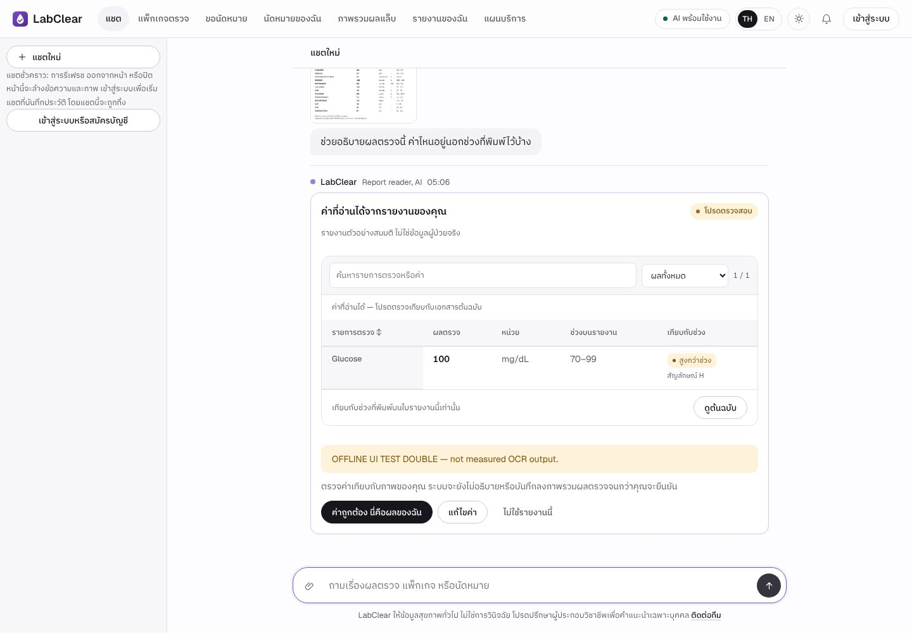
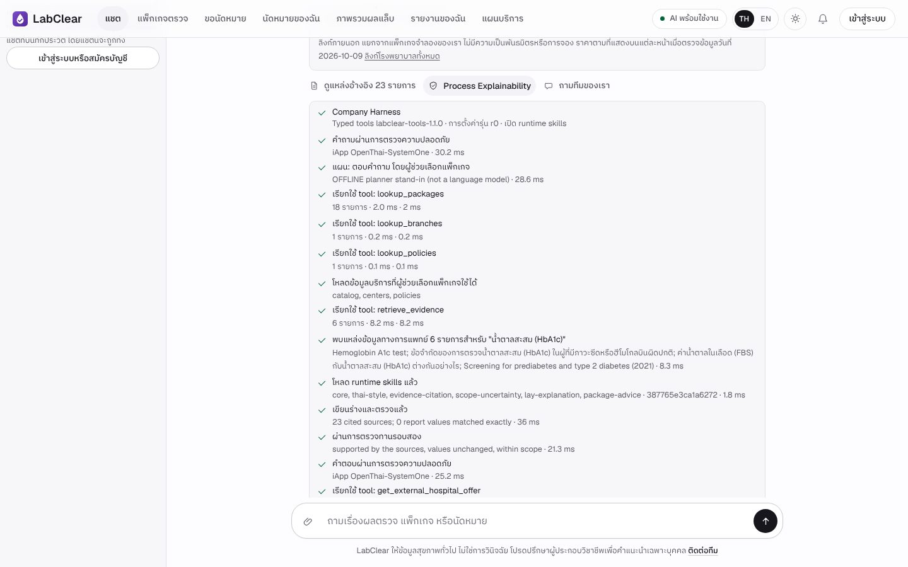
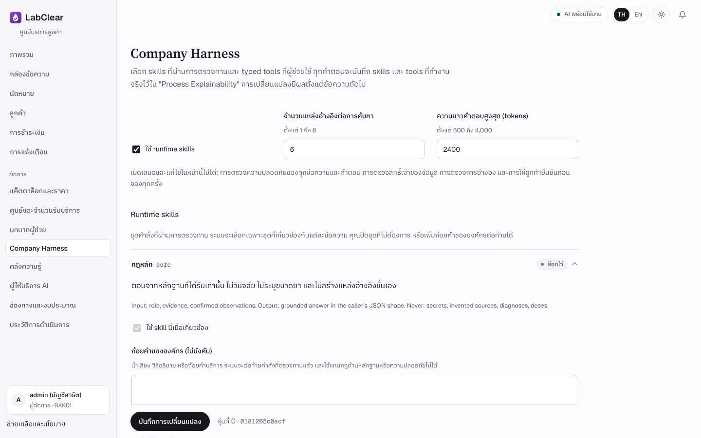
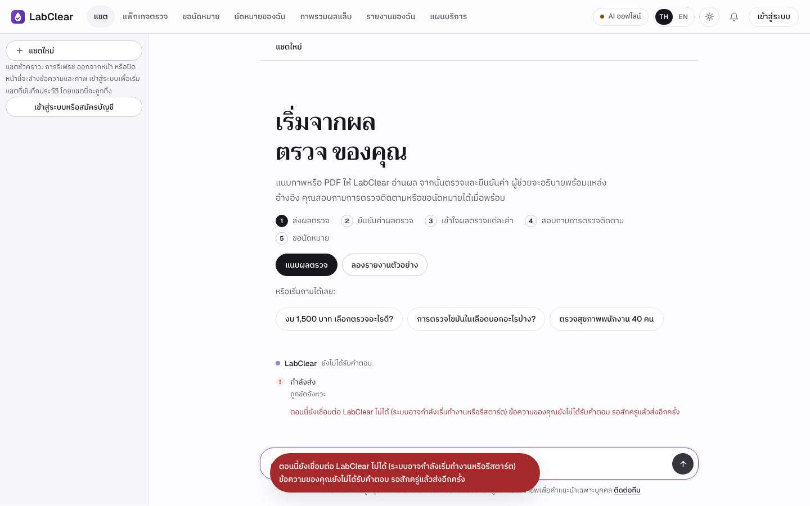

LabClear 4.0.0-rc3
LabClear 4.0.0-rc3Book a health check.
Understand your results.
A Thai-first chatbot for a simulated health-check clinic. It answers only from the clinic's own data, reads lab reports the customer confirms, and explains each value against the range printed on the same report, with sources.
06048308 Intelligent Chatbot Development · Final Project · October 2026
Customers ask the same questions at every visit
| When | What customers ask |
|---|---|
| Before | I have 1,500 baht. Which package should I take? |
| Booking | Which center is free? Can I move my appointment? |
| Results | What does HbA1c on my report mean? Which values are out of range? |
LabClear (simulated business)
- 18 packages290–2,890 baht · follow-up tests need staff review first
- 3 centersBangkok, Chiang Mai, Khon Kaen · Mon–Sat 07:00–16:00
- AI Lab Reportone free report · Plus 355 baht per 30 days
Prices, centers, payments and lab reports are synthetic. No real patient data, no real money.
From the report a customer has to the check-up they need
- Attach a photo or PDF of the reportRead in an isolated worker, then by Typhoon OCR, page by page
- The customer checks and confirms the valuesNothing is explained before confirmation
- Explanation with sourcesCompared only with the range printed on the same report; no diagnosis
- Ask about follow-up tests if wantedThe customer chooses; out-of-range values never trigger a sale
- Request a time; staff confirm; then payBookings and payments are previews until the customer confirms

Values read from a sample report, waiting for confirmation (offline test double)
One FastAPI service on Render
- Website and API togetherJinja pages and plain JavaScript, Thai first with an English switch
- Chat pipelineguards, planner, roles, typed tools, runtime skills, writer, checks, reviewer
- Provider gatenetwork switch, call cap, THB ledger and a free-only policy before every model call
- Blueprintauto-deploys every commit on
main; health check/ready

One message, step by step
- The model proposes, Python decidesthe planner suggests a role and search terms; code checks permissions and calls the tools
- Answers cite evidenceonly sources the tools returned; prices and report values checked in code; one rewrite, then withheld
- Five model callsinput guard, planner, writer, reviewer, output guard
- Every step is visiblestreamed live and kept under the answer as Process Explainability

Typed tools, reviewed skills, visible steps
| Tool | Advisor | Explainer |
|---|---|---|
lookup_packages · compare_packages | ✓ | – |
lookup_branches | ✓ | – |
lookup_policies | ✓ | ✓ |
retrieve_evidence (BM25, 148 records) | ✓ | ✓ |
get_confirmed_report_rows | – | ✓ |
preview_booking · get_external_hospital_offer | ✓ | – |

8 skill modules chosen per role and task, SHA-256 checked; every tool call audited without storing its arguments
Managers tune the assistant without code, inside safety rails
- Company Harnessturn unlocked skills on or off, add company wording, sources per search 1–8, answer length 500–4,000 tokens
- Limits can only go downtool timeouts and item counts never exceed the code's ceiling
- Lockedcore, evidence-citation and scope-uncertainty; safety checks; data permissions; customer confirmation
- Knowledge library148 owner-approved records as A4 PDF pages; pause any record

Every save is a new revision that can be restored; its SHA-256 is recorded with each answer
A request can no longer hang or end in a raw 502
- Exactly one terminal event
accepted, steps, heartbeats, thendoneorerrorwith a request ID - Stop really stopsthe provider call is cancelled and the slot freed
- Render-ready
/readyreadiness and a 20-second drain on SIGTERM

A proxy 502 becomes a Thai message; the text returns to the composer (browser suite 10/10)
What has been measured, and what has not
| Test | Result | Scope |
|---|---|---|
| 10 questions · 5 images · 5 safety cases | 7/10 · 1/5 · 5/5 | 3.0.1 with Typhoon on Render, reviewed answer by answer |
| Coursework benchmark A / B / C (OFFLINE) | 15/20 each | the real app with model stand-ins; images fail on Tesseract read errors |
| pytest · browser UAT · upgrade · TH/EN | 371 · 36/36 · 10/10 · 43/43 | 4.0.0-rc3, synthetic data, no outbound calls |
| Resilience R01–R12 · browser recovery | 12/12 · 10/10 | deterministic fault suite; not uptime, not Render latency |
| LIVE_FREE with Typhoon and iApp | not run | preflight blocked: policy not reviewed, free status unverified, no trial keys |
Three fixes found in live runs, measured before and after
| Before | Fix | After (rounds 2 and 3) | |
|---|---|---|---|
| 1 | Q01 and Q02 withheld (HTTP 502): citation limit too low, report values attached to package answers | Business sources always citable; stray values dropped; links stripped instead of rejecting | Q01 and Q02 answered and passed in both rounds |
| 2 | Q07 quoted the corporate price twice (1,980 instead of 990 baht) | Every amount checked against the catalog; one rewrite, then withheld | 990 / 1,490 / 2,390 baht per person, correct |
| 3 | Q08 and Q09 answered without searching the knowledge base | Questions naming a test always search; medical claims need medical sources | Sources cited; Q08 still overstated its source |
Ready for review; next we measure on the real system
Deploy
- Owner merges into
mainthe Blueprint deploys automatically - Set secrets in the Render Dashboarddatabase, data key, provider keys, budget cycle
- Check
/healthand/readyversion, commit and readiness
Next
- LIVE_FREE 10 / 5 / 5 with synthetic dataafter the owner confirms free status and keys
- Clinical and Thai-reader reviewevery coursework answer
- Demo clip, three minutes or less
LabClear 4.0.0-rc3Answers from the clinic's data.
Explanations the customer can check.
One FastAPI service on Render, Thai first, every step visible, every model call inside a budget, and no request left hanging.
นายวัชรินทร์ บัวสอน · นายศิริพล ศรีเฮงไพบูลย์